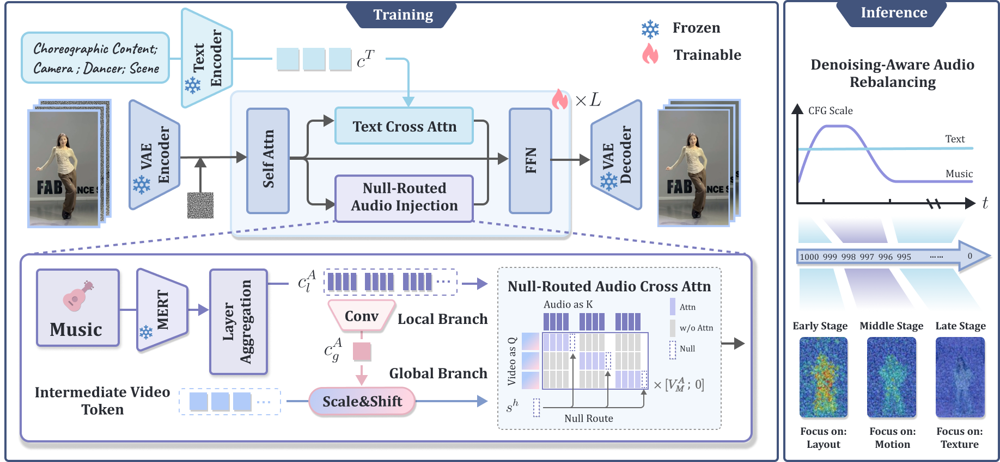

Challenge 1
Local music features capture short-term energy and beat onsets, but dance needs segment-level musical context to avoid fragmented or repetitive motion.
1Tsinghua University 2Beijing University of Posts and Telecommunications 3The Hong Kong University of Science and Technology
ICASSP 2027
Music-driven dance video generation requires models to follow semantic instructions, respond to musical dynamics, and preserve visual fidelity. Existing end-to-end methods remain limited by local music modeling, strong audio-motion binding, and imbalanced text-music conditioning across denoising stages.
We propose a music driven dance video generation framework that effectively models and coordinates music conditioning, improving music-motion coordination, motion diversity, and motion quality while maintaining competitive visual fidelity, subject consistency, and temporal stability.
Local music features capture short-term energy and beat onsets, but dance needs segment-level musical context to avoid fragmented or repetitive motion.
Music-to-dance mapping is one-to-many, while standard audio cross-attention can over-bind motion to audio and weaken pretrained video priors.
Text describes high-level semantics and choreographic intent, but text and music can compete differently across denoising stages.

Combines local rhythmic cues with segment-level musical context to promote coherent choreography and richer motion dynamics.
Uses a zero-valued null route to control total audio attention mass while preserving the relative distribution among real audio tokens.
Dynamically coordinates text-music guidance across denoising stages for a stronger alignment-quality trade-off.
@inproceedings{wang2026roda,
title={RoDA-Dance: Routed and Denoising-Aware Music Conditioning for Dance Video Generation},
author={Meng Wang, Zichao Nie, Xu He, Liyang Chen, Haiwei Xue, Runnan Li and Zhiyong Wu},
booktitle={ICASSP},
year={2027}
}